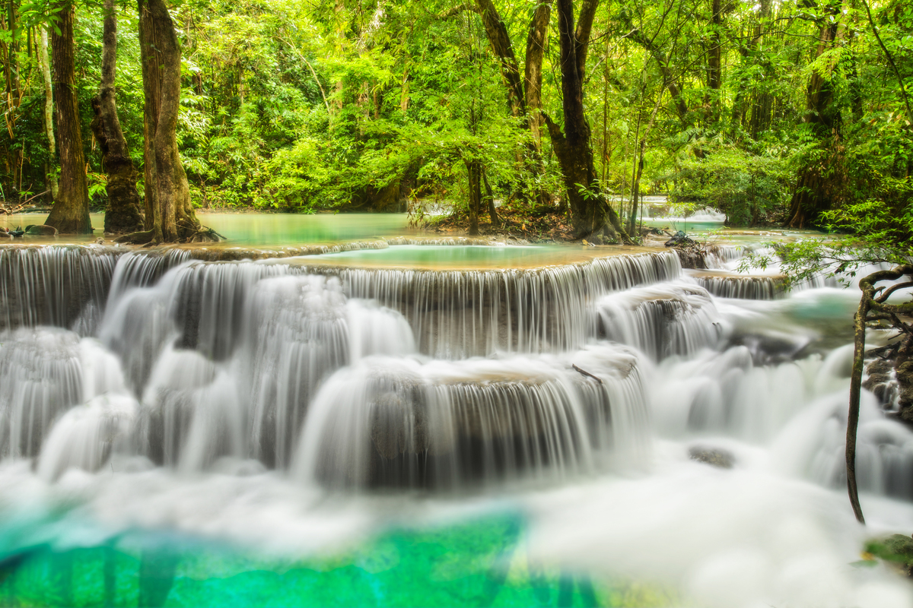

อุทยานแห่งชาติเอราวัณ
Nam Tok Erawan - Erawan Falls
Useful Information
| Location: | Erawan National Park |
| Open: |
All year daily 8-16:30. [2019] |
| Fee: |
Foreigners: Adults THB 300, Children THB 200. Locals: Adults THB 100, Children THB 50. [2019] |
| Classification: |
 Tufa Deposits
Rimstone Pool Tufa Deposits
Rimstone Pool
|
| Light: | n/a |
| Dimension: | |
| Guided tours: | |
| Photography: | allowed |
| Accessibility: | partly accessible |
| Bibliography: | |
| Address: |
Erawan National Park, Mu 4, Tha Kradan Sub-district, Amphur Si Sawat, Kanchanaburi 71250, Tel: +66-3457-4222, Fax: +66-3457-4288.
E-mail: |
| As far as we know this information was accurate when it was published (see years in brackets), but may have changed since then. Please check rates and details directly with the companies in question if you need more recent info. |
|
History
| 1975 | Thailand's 12th national park Erawan National Park founded. |
Description
|  |
| Image: rimstone pool in the forest. Public Domain. |
น้ำตกเอราวัณ - Nam Tok Erawan (Erawan Falls) is the main attraction of Erawan National Park. It is actually a valley with a series of cascades formed by rimstone pools. The whole area is karstified and the water of Nam Tok Erawan is very rich in limestone. The limestone is deposited by the water and forms dams. The yellow and white of the dams contrasts with the turquoise of the limestone rich water and the deep green of the surrounding rain forest.
There is a series of waterfalls with a 2km long trail connecting them. The pools are very popular with the locals for bathing, and the place is very crowded on weekends and especially on Songkran (Thai New Year).
The falls are named after the Erawan, the three-headed white elephant of Hindu mythology. It is also know under the names Airavata or Gajendra. The seven-tiered falls are said to resemble the erawan, but we could not find the number seven in any legend connected with it. However, this elephant has so many aspects, names, and legends, so we guess that some just took the chance to name this spot after his favourite elephant without caring about an explanation.
There are also five interesting caves which can be visited, Tham Mi (ถ้ำหมี), Tham Ruea (ถ้ำเรือ), Tham Wang Badan (ถ้ำวังบาดาล), Tham Phrathat (ถ้ำพระธาตุ), and Tham Ta Duang. They are located all over the park and not developed, but all are accessible on self guided tours on easy trails. Ask at the Park headquarter for detailed info and take a torch.

|
| Kuang Si Waterfalls Gallery |
 Search Google for "Nam Tok Erawan"
Search Google for "Nam Tok Erawan" Google Earth Placemark
Google Earth Placemark Erawan-Nationalpark – Wikipedia (visited: 26-MAR-2011)
Erawan-Nationalpark – Wikipedia (visited: 26-MAR-2011) Erawan National Park (visited: 15-Jun-2019)
Erawan National Park (visited: 15-Jun-2019){kind=link}
{kind=link}